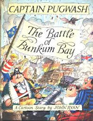
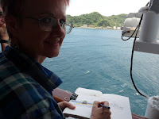
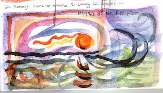
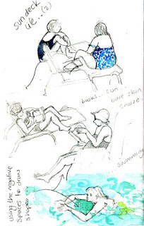
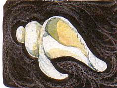

{kind=link}
Yes, says Claudia Myatt, "being an artist" is a way of viewing the world. Claudia
is a marine artist who lives on a Dutch tug and has her studio in a boatyard.
She provides illustrations for yachting magazines, drew a major series of
instructional books for the RYA (Royal Yachting Association) and it was a happy
day for me when she agreed to be the illustrator for my Strong Winds stories.
Because I do not think that anyone can draw boats. In fact I think most people
can’t. Not boats in action; boats responding to the pressures of the wind and
the resistance of the water; boats at the centre of a complex interplay of
forces determined by the shape of their hulls, the set of their sails, the
skills of the sailor.
{kind=link}

One of the children’s books I most enjoyed, years ago, was John Ryan’s The Battle of Bunkum Bay when lovable idiot Captain Pugwash conceived a master plan of sailing into the bay between the English and French fleets (to collect the treasure of course) protected by a double-sided flag. His theory was that the English would see the English flag and think his 'Black Pig' was one of their vessels and the French would assume the same. Pugwash forgot, however, that when he was sailing out of Bunkum Bay – with the wind behind him – his flag would blow out ahead of his ship, with precisely, disastrously, the opposite effect. Most of the cheery author-illustrators who churn out stories for the pirate market would never even realise this was an issue, let alone have the confidence to use it as a plot device.
So what about this “Anyone can be an artist” theory – is it
just a phrase for Claudia Myatt to encourage her students? Keeping a Sketchbook Diary was conceived in the Crow’s Nest bar of
the P&O cruise liner Aurora, as
she crossed the Pacific in January and February this year. No, this was not the result of some over-enthusiastic broaching of the rum barrel, nor a madness of the
equatorial sun, Claudia had been allocated Crow's Nest as a teaching space for the forty
or fifty students who were attending each of her twice daily watercolour
painting classes. She was also writing blogs for her friends at home. I
read one aloud to my mother as we sat on her sofa in Suffolk with the short January day already drawing in.
 |
| Approaching New Zealand |
{kind=link}
One of the
reasons I was reading to Mum was to try and avert the dreaded 'sundowners' syndrome. In the evenings, this winter in particular, Mum has become disorientated, agitated, angry or afraid. One of the phenomena about
which she complains is that “they keep changing everything”. I usually tend to
focus on the word “they” – the classic pronoun of the oppressed and powerless (think
of the chapter on Them and Us in Richard Hoggart’s The Uses
of Literacy) – but often, when we’re sitting on the sofa, looking out of the
window I’m trying to supply Mum with words, such as “fence”, “lawn”, “roof”
and “chimney” for the objects in our view.
Today, thinking about what Claudia had written in her blog, I realised that, once you had lost the names for these things, the meanings were also in danger. Once meanings had gone, “fence”, “lawn”, “roof” and “chimney”were merely a collection of different shapes. And, as the light dimmed, their proportions relative to one another changed, as well as their colours. The brown creosoted fence in particular appeared to advance menacingly as the last of the light retreated from the strip of grass in front of it. When I thought a little more about the phenomenon of shadows I was not in the least surprised that Mum was also seeing “spooks”.
Today, thinking about what Claudia had written in her blog, I realised that, once you had lost the names for these things, the meanings were also in danger. Once meanings had gone, “fence”, “lawn”, “roof” and “chimney”were merely a collection of different shapes. And, as the light dimmed, their proportions relative to one another changed, as well as their colours. The brown creosoted fence in particular appeared to advance menacingly as the last of the light retreated from the strip of grass in front of it. When I thought a little more about the phenomenon of shadows I was not in the least surprised that Mum was also seeing “spooks”.
 |
| Warm-up exercise, using colour with music |
{kind=link}
One might want
to pause and have a debate about this: what about the auditory element in
words, one might say, or the visual impact of light and colour? Line is but a
single aspect.
 |
| Sun deck life: using negative spaces |
{kind=link}
“To draw something you have to look at it as if you have never seen it before, because what you are aiming to record is what is actually there, not what you assume you are seeing – there is a big difference. Even the act of trying to draw connects to an experience in a way that is memorable and intense”.
Follow that advice and you would, in some sense, draw the boat
right -- whether or not you had any understanding of the effects of underwater
hull design -- because you would be looking with a clear, unprejudiced eye. That’s
how I feel, as a writer, when I am trying to find the words and the rhythms to convey
precisely what is in my mind. Anyone can be an artist
if they develop an artist's approach to the world – and anyone can be a writer too. As for me,
 |
| Drawing small things large |
{kind=link}